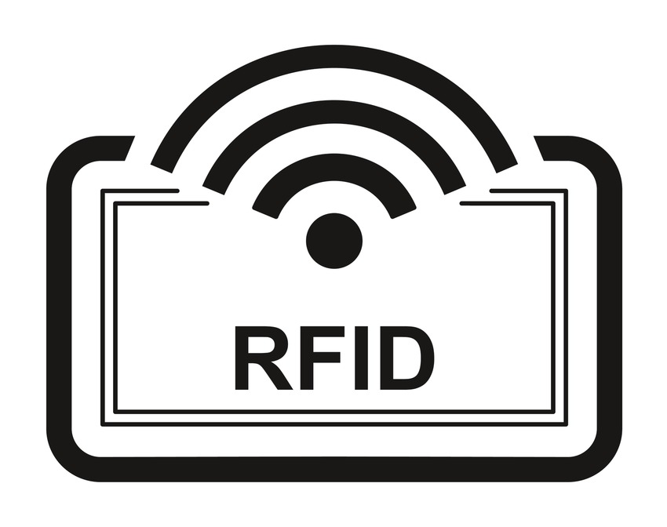
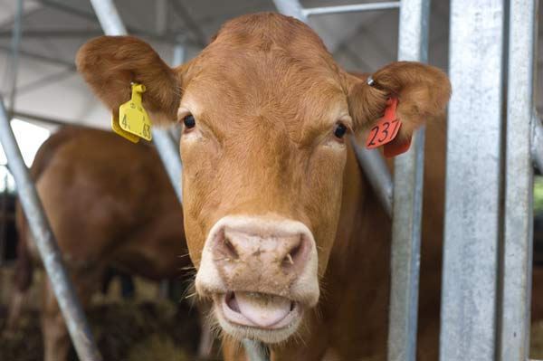

Kolczyk RFID
RFID (ang. Radio-frequency identification) – technika, która wykorzystuje fale radiowe do przesyłania danych oraz zasilania elektronicznego układu (etykieta RFID) stanowiącego etykietę obiektu przez czytnik, w celu identyfikacji obiektu. Technika umożliwia odczyt, a czasami także zapis układu RFID. W zależności od konstrukcji umożliwia odczyt etykiet z odległości do kilkudziesięciu centymetrów lub kilku metrów od anteny czytnika. System odczytu umożliwia identyfikację wielu etykiet znajdujących się jednocześnie w polu odczytu. Nasze kolczyki wykorzystują ulepszoną wersję RFID. Dzięki zastosowaniu najnowszych technologii, identyfikatory są wykrywane nawet z odległości 50 metrów.
Każde zwierze ma zamocowany kolczyk z modułem RFID. Identyfikator posiada podstawowe informacje o zwierzęciu np: datę urodzenia, płeć. Możesz wprowadzić dodatkowe informacje wedle uznania przez naszą aplikację Smart Rolnik. W programie podstawowym nad Twoim terenem okresowo przelatuje dron na wysokości ok 30m który skanuje wszystkie identyfikatory RFID i umieszcza je na mapie aby zlokalizować wszystkie zwierzęta.
Specyfikacja techniczna
| MIN temperatura pracy | -10°C |
| MAX temperatura pracy | +50°C |
| Cena jednostkowa | 0.80zł |
| Trwałość | 20 lat |
| Zasięg | 50m |
| Rozmiar | 5x5 cm |